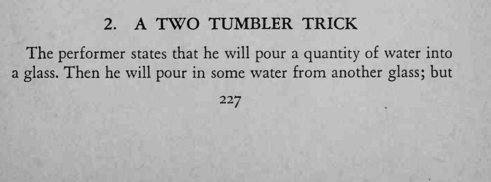
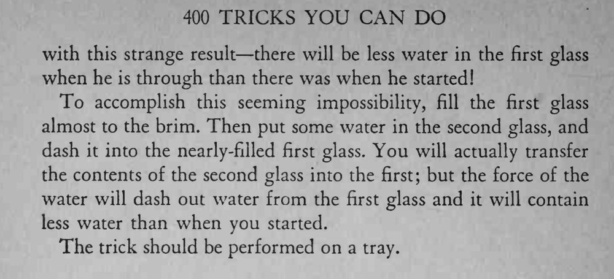

魔术师说往第一杯里再倒一杯水，结果结束时第一杯里的水反而比开始时更少。
杯口越满、泼得越猛效果越明显，一定要用托盘接水。


The performer states that he will pour a quantity of water into a glass. Then he will pour in some water from another glass; but with this strange result there will be less water in the first glass when he is through than there was when he started! To accomplish this seeming impossibility, fill the first glass almost to the brim. Then put some water in the second glass, and dash it into the nearly-filled first glass. You will actually transfer the contents of the second glass into the first; but the force of the water will dash out water from the first glass and it will contain less water than when you started. The trick should be performed on a tray.